CS184/284A Spring 2025 Homework 3 Write-Up
Link to GitHub repository: github.com/cal-cs184/hw-pathtracer-updated-rays
Overview
In this assignment, we implemented Monte Carlo path tracing to simulate realistic lighting in 3D scenes. Our goal was to model how light interacts with surfaces by tracing paths that account for both direct illumination (light coming directly from a source) and also indirect illumination (light reflecting off of other surfaces). Most of our logic centers on sampling and integrating radiance using recursive bounce calculations with the rendering equations. We also implemented both hemisphere and light importance sampling methods. Raytracing is a powerful technique because it mimics the physical behavior of light, allowing us to generate images with natural shadows, soft lighting, and color bleeding effects, and we really enjoyed this homework assignment.
John’s thoughts:
This homework was very enlightening. Raytracing is something I’ve always been fascinated by and this assignment is the very reason I wanted to take this class in the first place. Getting to combine everything I’ve learned so far (not only in terms of conceptual graphics from this class, but also concepts like recursion from CS 61A and probabilistic algorithms from CS70) into a project with such satisfying visual results was very rewarding to me. Although the homework took a very long time, and debugging was a nightmare at times, it was fun bouncing ideas off of Kevin and seeing our engine render beautifully ray-traced scenes.
Kevin’s thoughts:
Things that I am most interested in is definitely adaptive sampling as unlike other parts of the assignment that is mostly mechanical and physical based, optimization tasks like this using stats always interests me as these tricks often feel smart and interesting as they are less discussed in general. What I learned the most from this is that it is very important to make sure we understand everything conceptually before getting started, even as a person who learns things faster by playing around with the code, I often find that I jump in too early without all the necessary context to play around everything effectively, many times resulting a code that need major revision after I fully understand everything.
Part 1: Ray Generation and Scene Intersection
Generating Rays
The core rendering loop of our pathtracer starts with the function PathTracer::raytrace_pixel(). The pathtracer must generate and send rays originating from the camera and shooting “through” each pixel on the screen.
We generate these rays with Camera::generate_rays(x, y). This function takes in a pair of coordinates in image space and outputs a Ray object in world space. In order to do that, we must generate the ray in camera space and only then can we transform it into world space.
Inside the Camera::generate_rays(x, y) function, we take the coordinates (x, y) and then apply several transformations to it.
- Subtract
xandyby 0.5 in order to “center” the rays relative to the image plane, and then multiply them by 2 in order to normalize the image. - Multiply
xbytan(0.5 * hFov)andybytan(0.5 * vFov), respectively. - Convert the coordinates (which are currently 2-dimensional) into a 3-dimensional vector, with the z-coordinate set to -1. We can imagine the image as a box projected onto the plane z = -1.
After these transformations, we actually generate a Ray object and initialize it such that its origin exists at (0, 0), and its direction is a normalized vector passing through the point we created, at [x’, y’, -1].
Now that we have the Ray in camera space, transforming it into world space is simply a matter of matrix multiplication. We are given the 3x3 matrix c2w which, when multiplied by a set of coordinates in camera space, rotates and scales the coordinates to their corresponding coordinates in world space. This brings us to our final transformation from camera space to world space.
- We create a transformation matrix from c2w by inserting a column with the translation from the world origin to the camera (in world space), and a row with 4 zeroes and a 1. This matrix, when passed as an argument into the
transform_by()method of a Ray object, will complete this transformation for us and mutate the Ray so that it exists in world space.
Now we are able to generate a ray through a pixel coordinate. However, we want to supersample and generate multiple rays for every pixel on the screen in order to minimize noise. We also want some sort of way to get the light information from the points on the objects that our rays intersect with, and update our sample buffer with it.
Inside of our PathTracer::raytrace_pixel(x, y) function, we generate a number of rays (specified by a parameter ns_aa that the user sets when rendering an image). Each ray is generated using our Camera::generate_rays(x, y) function, where we pass in a coordinate randomly sampled from the 1 by 1 pixel from (x, y) to (x + 1, y + 1). We take all of the rays generated, and average the scene radiance along them to determine the integral of radiance for each pixel. To do this, we:
- Store the coordinates (x, y) as a
Vector2Dand call itorigin, representing the left corner of our pixel. - Initialize another
Vector2Dcalledsample, which is some randomly sampled coordinate (usinggridSampler->get_sample()) with minimum values x, y and maximum values x+1, y+1. - Initialize a
RaywithCamera::generate_rays(x, y)using the coordinates insample. - Pass in the newly generated ray into
Pathtracer::est_radiance_global_illumination(Ray), obtaining the scene radiance along that ray. - Repeat steps 2-4 in a for-loop, iterating through it
ns_aatimes and calculate the integral of radiance for the pixel by averaging each ray’s scene radiance.
Ray-Primitive Intersections
In order to test whether a Ray interests a triangle, we implemented the Möller-Trumbore Algorithm, which is an optimization shown in lecture 9. The algorithm uses properties of barycentric coordinates, a system of coordinates where a coordinate is represented as a linear combination of a triangle’s three vectors at its vertices, in order to determine whether the intersection of the ray with the triangle’s plane is “inside” the triangle. We used the original paper as well as the variables from the lecture 9 slide to guide our implementation.
The algorithm is derived from two equations. The first is the equation for a ray, \(R(t)=O+tD\), where \(O\) is the origin of the ray, \(D\) is the normalized direction vector, and \(t\) is the (scalar) parameter that specifies a point in ray's direction. The second equation is \(T(b_0, b_1, b_2)=b_0P_0+b_1P_1+b_2P_2\), where the set of three scalars \(b_0, b_1, b_2\) are the barycentric coordinates of a point. Since the vectors \(P_0, P_1, P_2\) are not linearly independent and (as a property of barycentric coordinates) the coordinates all must add up to 1, we can arbitrarily modify one of the scalars to make this a function of two arguments.
Now we have \(R(t)=O+tD\), and \(T(b_1, b_2) = (1 - b_1 - b_2)P_0 + b_1P_1+ b_2P_2\).
In order to find the point at which the ray intersects the triangle's plane, and whether the intersection lies within the triangle, we set the two equations equal to each other and get:
\(O+tD = (1 - b_1 - b_2)P_0 + b_1P_1+ b_2P_2\)
From here, the Möller-Trumbore paper explains how to manipulate the equation and use Cramer's rule to obtain the following equation from lecture.\[ \begin{bmatrix} t \\ b_1 \\ b_2 \end{bmatrix} = \frac{1}{S_1 \cdot E_1} \begin{bmatrix} S_2 \cdot E_2 \\ S_1 \cdot S \\ S_2 \cdot D \end{bmatrix} \]
For our implementation of the algorithm, we decided not to calculate all of the components at the beginning of the function but instead spread checks in between that might return false.
-
We first calculate the vectors
s1ande1as shown in the equations above, and set the result to a variabledet(short for determinant). We also check to make sure the determinant is nonzero (since \(\frac{1}{0}\) is undefined) and returnfalseifdet == 0 - Then, we calculate
s, and calculate one of our barycentric coordinatesb1by multiplying the inverse ofdetby the dot product ofs1ands. Before we proceeding, we return false ifb1is less than 0 or greater than 1, since barycentric coordinates that lie within the triangle satisfy the condition that all 3 coordiantes are between 0 and 1. - Next we do something similar for
b2, calculating for it by dividin the dot product ofs2and the ray directionDby the inverse ofdet. Once again, we check to make sureb1 > 0.0 || b1 < 1.0is false before proceeding. - Now that we are certain that the intersection between the ray and the triangle's plane does in fact lie within the bounds of the triangle, we calculate
tby finding the dot product ofs2ande2, and dividing that by the inverse ofdetand returntrue.
The same algorithm used to evaluate the intersection in the Triangle::has_intersection(Ray) function used above was also used for Triangle::intersect(Ray, Intersection), but with the addition of writing to the Intersection object the triangle's properties (the value of t, the Primitive object, the BSDF property, and the face normal). The ray's max_t attribute was also updated so that any intersection with an object further than the current primitive would not show up in front of this one.
As for evaluating intersections analytically with spheres, we followed a similar process but with a different algorithm. Utilizing lecture slides from Stanford's Spring 2022 offering of CS348b, we used the following formulas:
Ray: \( r(t) = \mathbf{o} + t\mathbf{d} \)
Sphere: \( \|\mathbf{p} - \mathbf{c}\|^2 - r^2 = 0 \)
To find the intersection between the ray and sphere, we set\[ p = r(t) = o + td \]
where p is the set of all points on the edge of the sphere. Thus, finding the points where \(p=r(t)\) will allow us to find where the ray and sphere intersect.
\[ (\mathbf{o} + t\mathbf{d} - \mathbf{c})^2 - r^2 = 0 \]
We can now expand the equation into quadratic form and solve for the coefficients \(a\), \(b\), and \(c\) analytically with the quadratic formula.
\[ at^2 + bt + c = 0 \]
\[ a = \mathbf{d} \cdot \mathbf{d} \]
\[ b = 2(\mathbf{o} - \mathbf{c}) \cdot \mathbf{d} \]
\[ c = ((\mathbf{o} - \mathbf{c}) \cdot (\mathbf{o} - \mathbf{c})) - r^2 \]
By solving the quadratic equation, we can find the intersection points between the ray and the sphere. Similarly to with the ray-triangle algorithm, If the discriminant \(b^2 - 4ac\) is negative, then there is no intersection and we return false without needing to do any further calculation. If it is zero, then there is one intersection point (the ray is tangent to the sphere). If it is positive, then there are two intersection points and we assign the smaller to t1 and the larger to t2. Finally, we update the Intersection object and the ray's max_t properties accordingly.
Below are some renders with debug/normal shading to demonstrate that intersection is implemented properly.
|
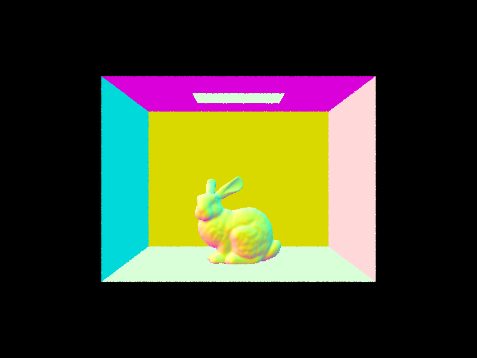
|

|
Part 2: Bounding Volume Hierarchy
Our task for this part was to implement a function, BVHAccel::construct_bvh() that takes in a set of primitives and a max_leaf size, and recursivelyt constructs a Bounding Volume Hierarchy (BVH) tree. Although the bulk of the logic is implemented in the BVHAccel::construct_bvh() function, we also implemented two helper functions, BVHAccel::calcVariance() and BVHAccel::chooseAxis.
We took the following steps inside our BVHAccel::construct_bvh() function:
- Given only a set of primitives and a max_leaf_size, we initialize a
BBox(bounding box) object. - We then iterate through every primitive in the set, expanding the bounding box to include all primitives using
bbox.expand() - We then construct a new
BVHNodeobject with theBBoxwe just created and expanded. We also calculate the average coordinates of all primitives in this bounding box and store it in a 3D vector.
The reason we are storing the mean position of the primitives is for our splitting heuristic. To split each bounding box, we decided to use the variance of the primitives' centroids along each axis. This is because the variance is a measure of how spread out the points are, and we want to split the bounding box along the mean of the axis with the highest variance in order to prevent the bounding boxes from being extremely "flat". By splitting the bounding box along its longest axis, we keep the child nodes as close to a cube as possible.
- If the number of primitives in the current node is at least as large as the
max_leaf_size, then the current node is considered an "interior" node and will contain two leaf nodes. - We created a helper function called
calcVariancewhich takes in a set of primitives and outputs a vector of the variances of the primitives' centroids along each of the three axes. We find which axis has the highest variance and store that to a variable calledaxis - We then use the
std::partition()function to essentially split and reorder the primitives, with all primitives of centroids higher than the mean going to the right and all lower than the mean going to the left. - We construct two new nodes (recursively) calling
BVHAccel::construct_bvh()isnide of itself twice; once for the left node and once for the right node. - Otherwise, the current node is a "leaf" node and does not have any children, but does have pointers to the primitives passed in
- Finally, we return the current node.
Now that we aren't checking whether a ray intersects with every single primitive in the scene, we are able to render files with thousands of triangles at much faster speeds.
|
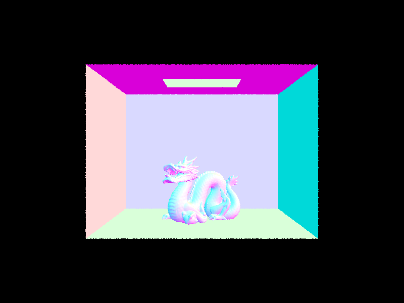
|
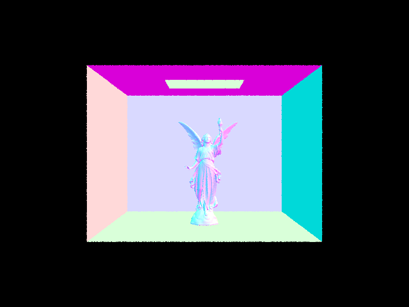
|
Comparing the mesh in cow.dae, we found that even though our BVH implementation increased the time it took to construct the BVH from 0.0010 seconds to 0.0033 seconds, the time it took to actually render slashed dramatically from 20.8426 seconds to 0.0469 seconds. In addition, the average intersections per ray dropped from about 745 per ray to about 1.6, and the average speed in millions of rays per second increased from 20,000 rays per second to 10 million rays per second. We see similar results with the other meshes we tested, such as maxplanck.dae and CBlucy.dae, as shown in the table below. Overall, we notice that although the time it takes to build the bounding volume hierarchy structure does tend to add some miliseconds, that added time pales in comparison to the speed and performance gains we make from rendering using BVH. As the data shows, the computer can achieve the same result while checking for hundreds or thousands times less intersections for each ray. This reduction of unecessary computation and memory storage results in thousands of times more rays generated per second, and drastic reductions in rendering time. The most extreme example of this is the CBlucy.dae mesh, which has 133,796 primitives. The time it took to render the scene dropped from 16,260.17 seconds to 0.0464 seconds (which is almost the same time as the cow.dae mesh took to render).
|
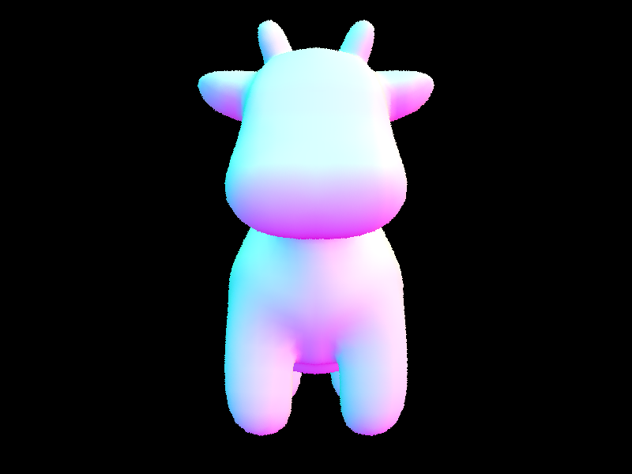
|
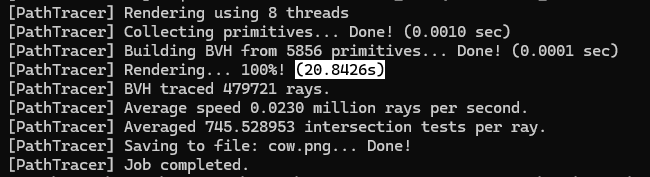
|
| File | # Primitives | BVH construction (sec) | Rendering time (sec) | AVG speed (rays / sec) | AVG intersections per ray |
|---|---|---|---|---|---|
| cow.dae | 5,856 | 0.0001 -> 0.0033 | 20.8426 -> 0.0469 | 0.023 mil -> 10.12 mil | 745.53 -> 1.66 |
| maxplanck.dae | 50,801 | 0.0012 -> 0.0347 | 195.5508 -> 0.0567 | 0.025 mil -> 8.25 mil | 6022.19 -> 2.29 |
| CBlucy.dae | 133,796 | 0.0044 -> 0.1064 | 549.0331 -> 0.0464 | 0.0009 mil -> 10.23 mil | 16,260.17 -> 0.69 |
Part 3: Direct Illumination
In estimate_direct_lighting_hemisphere, we calculate the direct lighting at a point by randomly picking directions over the whole hemisphere above the surface. We first set up a coordinate frame based on the surface normal so we can easily work in local space. Then, for each sample, we pick a random direction in the hemisphere, check if that direction hits anything (by tracing a shadow ray), and if not blocked, we evaluate the BSDF to see how much light reflects toward the viewer. We multiply the BSDF value by the cosine of the angle with the normal and divide by the probability of picking that direction (the PDF). After looping through all samples, we average the results. This method works for any scene, but it’s pretty noisy because many of the random directions don’t actually hit lights.
In estimate_direct_lighting_importance(), we improve performance by only sampling directions that actually point toward lights. For each light in the scene, we sample directions based on how the light emits light — which means we’re more likely to sample useful directions. If the light is a point or directional light (delta light), we just take one sample. For area lights, we take multiple samples (defined by global parameter ns_area_light). For each one, we shoot a shadow ray toward the light, check if it’s blocked, and if not, we compute how much light reflects using the BSDF, cosine term, and the PDF. We average the result over all samples and all lights. Since we’re only sampling directions that contribute to the final color, this method gives us cleaner images with less noise.
|
|
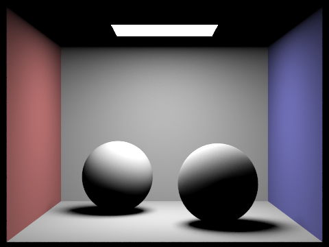
|
|
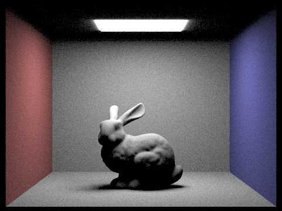
|
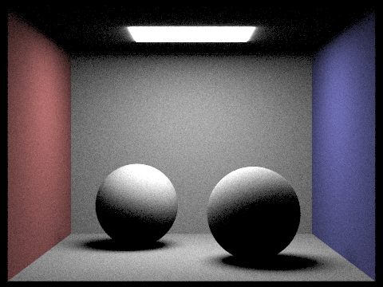
|
The noise reduction when switching from hemisphere to importance sampling is especially visible in shadows. As seen below, fewer light rays per area light result in noisier renders overall, but especially in the soft shadows.
|
|
|
|
|
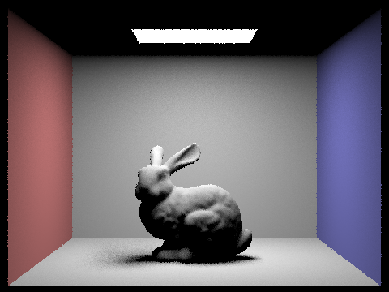
|
The results from hemisphere sampling are typically much noisier than with importance sampling, which provides us a much "smoother" look overall. Hemisphere sampling tends to have noise throughout the entire scene, but importance sampling has especially noisy soft shadows. This demonstrates that importance sampling appears to produce smoother results in well-lit areas, but noisier results in areas of indirect lighting (the soft shadows) or occluded corners. Hemisphere sampling, on the other hand, appears to be uniformly noisy. In addition, hemisphere sampling gives a "glow" effect around the edge of area lights, which importance sampling does not.
Part 4: Global Illumination
To implement global illumination in our path tracer, we put most of the logic in the PathTracer::at_least_one_bounce_radiance() function. This function handles both direct and indirect lighting by recursively tracing rays, letting them bounce past just the first intersection. At each bounce, we evaluate the BSDF to sample a new direction and compute the radiance along that new path. We check if the ray intersects a surface, and if it does we call the function again within itself to gather more light recursively. Our first base case we checked for was if r.depth == 0, which would only ever be reached if the user set the max_ray_depth> was set to 0. Otherwise, the primary base case would be returning one_bounce_radiance() for the last bounce. The recursive option starts from the camera and continues bouncing off objects until it reaches its' max depth, where it stops and adds the accumulative luminance.
We also implemented non-accumulative bouncing. If isAccumBounces is set to false, then instead of calling getting the direct light at every recursive bounce and including it in the total, we only go to the very last bounce and grab the indirect lighting bouncing from one surface, to another, and then to the camera.
Global Illumination
|
|
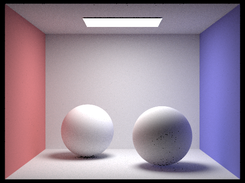
|
Direct vs Indirect Lighting
|
|
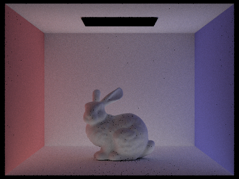
|
|
Accumulative Bouncing
| 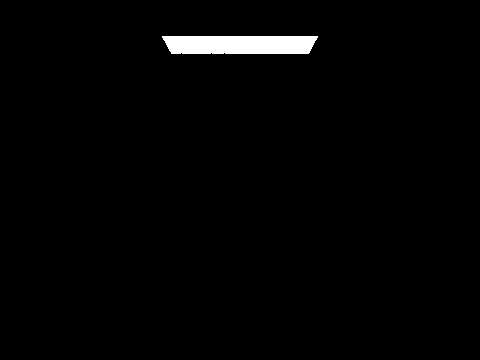 |

|
||||
|
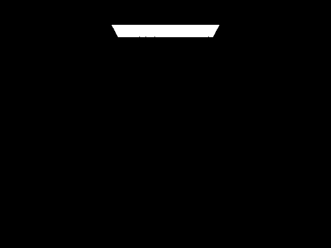
|
|
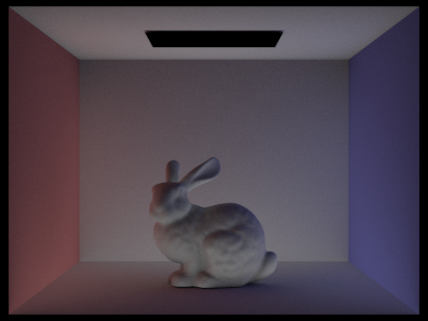
|
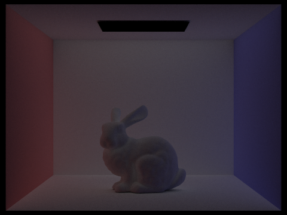
|
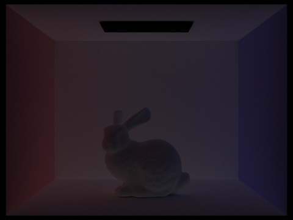
|
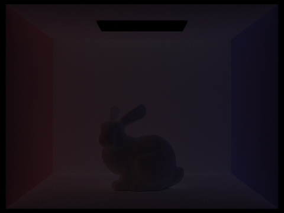
|
At the second and the third bounce of light, we see the bunny in the scene dimly lit. The "bounce light" that these levels contribute are crucial to the realism that we are trying to achieve with ray tracing. The second and third bounces add some light to the shadows that, in the direct lighting render, would otherwise be completely dark. This brings our render much closer to photorealism.
Russian Roulette
|
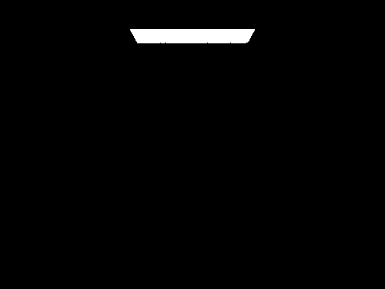
|
|
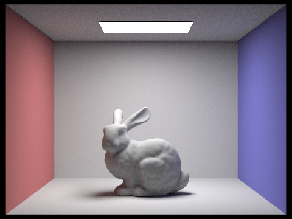
|
|
|
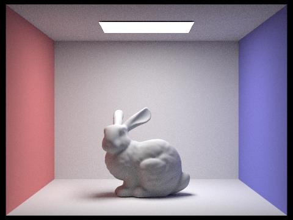
|
|
Samples per pixel
|
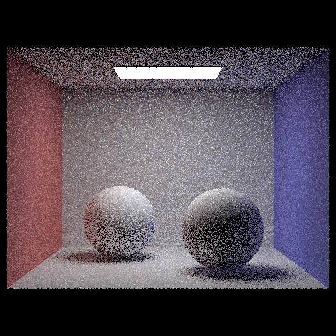
|
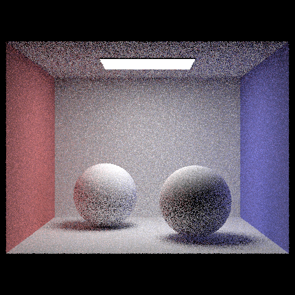
|
|
|
|
|
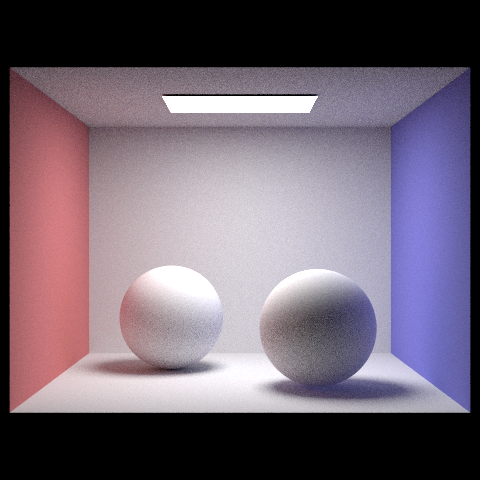
|
Part 5: Adaptive Sampling
Adaptive sampling is a technique where we detect the variance of the samples we make and run a Z-test to figure out how confident we are in the current sample. Basically, we check our sample as the algorithm runs. If the results change a lot each time we sample, we take more samples since we're less confident the current ones reflect the actual value. But if all the samples we've got so far give very similar results, we feel confident that even with more samples in the future, the result will stay the same, so we stop sampling.
In our implementation, we just followed the guidelines. For each sample, I kept track of the s1 and s2 numbers, and computed the standard deviation and mean every time a batch finished. If the Z-test shows the confidence level is higher than our tolerance, we stop and return the result
|
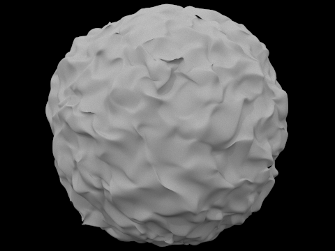
|
|
|
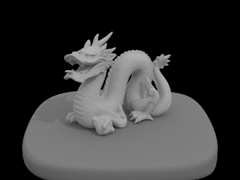
|
|
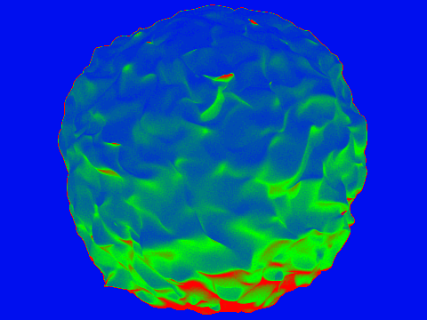
|
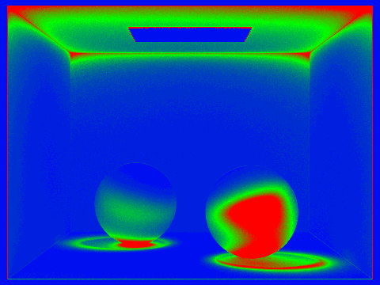
|
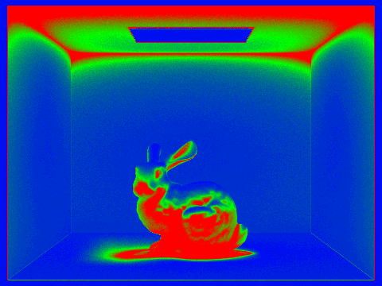
|
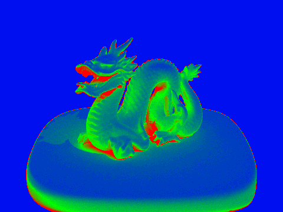
|
(Optional) Part 6: Extra Credit Opportunities
For this homework, we attempted to implement a jittered pixel sampler (challenge level 1).
Here we implemented Jittered sampling that by adding some a random offset within the pixel, we can see that when using sample size 1 the distribution of the shadow under the bunny with default sampling look to be distributed in a pattern while Jittered Sampling randomizes the noise a little bit so that we cannot perceive this fake pattern in noise created by uniformed sample, also see the wall that in default we have some aliasing of almost notch like cutout but with Jittered sampling, because the randomness while it is not clean it certainly don’t have that patterned noise we are seeing which is more pleasant to human eye as we tend to see patterns more clearly.
|
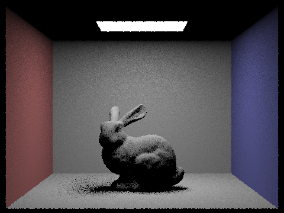
|

|
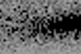
|
|
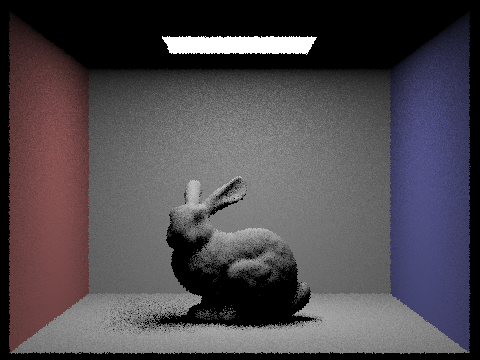
|
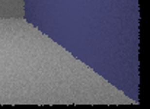
|
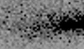
|
Acknowledgement of AI
Our use of AI for this project was limited to asking LLMs to explain concepts to us on a high level and assisting our debugging process. We did not ask AI to write code for us.